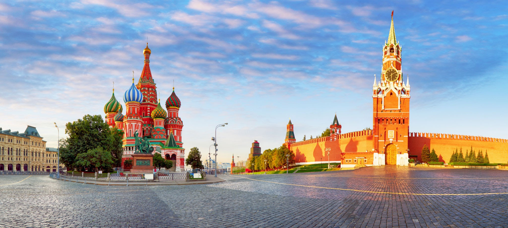

Историческая столица Великого княжества Московского, Русского царства, Российской империи (в 1728—1730 годах), Советской России и СССР. Народные названия: «Первопрестольная», «Третий Рим». Город-герой. В Москве находятся федеральные органы государственной власти Российской Федерации (за исключением Конституционного суда), посольства иностранных государств, штаб-квартиры большинства крупнейших российских коммерческих организаций и общественных объединений. Расположена на реке Москве в центре Восточно-Европейской равнины, в междуречье Оки и Волги.
Москва — важный туристический центр России. Московский Кремль, Красная площадь, Новодевичий монастырь и Церковь Вознесения в Коломенском входят в список Всемирного наследия ЮНЕСКО. Она является важнейшим транспортным узлом. Город обслуживают 5 аэропортов, 9 железнодорожных вокзалов, 3 речных порта (имеется речное сообщение с морями бассейнов Атлантического и Северного Ледовитого океанов). С 1935 года в Москве работает метрополитен.
Москва находится в центре европейской части России, в междуречье Оки и Волги, на стыке Смоленско-Московской возвышенности (на западе), Москворецко-Окской равнины (на востоке) и Мещёрской низменности (на юго-востоке). Территория города после изменения городских границ составляет 2561,5 км². Средняя высота над уровнем моря составляет 156 м. Наивысшая точка находится на Теплостанской возвышенности и составляет 255 м, самая низкая точка — вблизи Бесединских мостов, где река Москва покидает город (высота этой точки над уровнем моря составляет 114,2 м). Климат Москвы — умеренно-континентальный, с чётко выраженной сезонностью.
В Москве есть большие лесные и парковые массивы, в пределах города находится часть Природного национального парка Лосиный Остров, множество скверов и рекреационных зон. Несмотря на огромную степень застройки Москвы, площадь озеленённых территорий города составляет 34,3 тысяч га или около 1/3 общей территории города. В московских лесах водятся не только белки, ежи и зайцы, но и более крупные дикие животные, такие как кабан и лось, пятнистые олени, лисица, норка и горностай, дикие утки и цапли, водятся редкие фазаны и серые куропатки, чёрный коршун и многие другие животные.
Название города происходит от названия реки. Широкое распространение среди специалистов получили гипотезы о славянском и финно-угорском происхождении названия реки. В финно-угорской версии исконным значением слова было - «вода, река, мокрый», с марийского языка - «медведь, самка, мать, медведица». В славянской версии - «жидкий, топкий, сырой, слякотный».
В центре Москвы и в тоже время, древнейшей её части расположена крепость Моско́вский Кремль — главный общественно-политический и историко-художественный комплекс города, официальная резиденция президента Российской Федерации. Кремль — самая крупная крепость на территории Европы, сохранившаяся и действующая до наших дней.
Возраст Москвы точно не известен. Первые поселения на территории Московского Кремля относятся к бронзовому веку (II тысячелетие до н. э.). У современного Архангельского собора было найдено финно-угорское поселение, относящееся к раннему железному веку (вторая половина I тысячелетия до н. э.) Поселение занимало центр верхней надпойменной террасы Боровицкого холма (район современной Соборной площади) и, возможно, имело укрепления. С началом в X веке славянской колонизации бассейнов Оки и Москвы-реки, вершину Боровицкого холма заселили вятичи.
Первое летописное упоминание о Москве относится к 1147 году. Летописным упоминанием является указание Ипатьевской летописи на пятницу 4 апреля 1147 года, когда ростово-суздальский князь Юрий Долгорукий принимал в городке под названием Москов своих друзей и союзников во главе с новгород-северским князем Святославом Ольговичем.
| Статус | Столица |
|---|---|
| Мэр | Сергей Собянин |
| Первое Упоминание | 1147 год |
| Население | 12 687 079 чел (2020) |
| Плотность | 4949,47 чел/км² |
| Площадь | 2561,5 км² |
| Климат | Умеренно-континентальный |
| Часовой Пояс | UTC+3:00 |